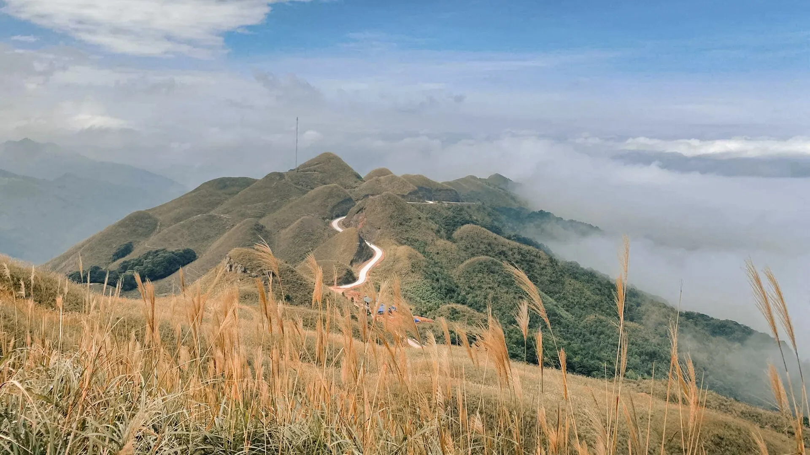

ビンリエウのクズウコン春雨
クズウコンから手作りした透明でもちもちの春雨――鶏スープや炒め物に。
イメージ写真: クズウコン春雨のかご この料理の実際の写真はありますか？Việt Travel に送ってください
ビンリエウはクアンニン省の山あいの国境の郡で、国境標に沿って草の尾根をうねる「恐竜の背骨」の道、10 – 11 月の白いススキ、ケーヴァン滝で知られます。タイー族、ザオ・タインファン族、サンチー族のふるさとで、市の日、ソンコー祭り、クズウコンで作る手作り春雨があります。
天気を読み込み中...
月を押すと旅行に適した時期か確認できます
White tea-oil camellias cover the hills and reeds line the border-marker road – Binh Lieu often holds its camellia festival at this time.
Cool, misty mornings – bring a jacket; the border-marker road is steep, so you need a solid vehicle and steady hands.
旧暦の祭りは毎年日付が変わります。出発前に公式の日程をご確認ください。
クズウコンから手作りした透明でもちもちの春雨――鶏スープや炒め物に。
イメージ写真: クズウコン春雨のかご この料理の実際の写真はありますか？Việt Travel に送ってくださいマックケン山椒をまぶし台所の火の上で燻した水牛肉を裂いて、チャムチェーにつけて。
Stir-fried arrowroot noodles, chicken noodle soup
Thị trấn Bình Liêu 更新 2026/10 誤りを報告Hill chicken with lime leaves, grilled chicken
Thị trấn Bình Liêu 更新 2026/10 誤りを報告Smoked buffalo and smoked sausage
Thị trấn Bình Liêu 更新 2026/10 誤りを報告Rice rolls and noodle porridge
Chợ Bình Liêu 更新 2026/10 誤りを報告Ash cakes, coóc mò sticky-rice cakes and coloured sticky rice
Chợ trung tâm Bình Liêu 更新 2026/10 誤りを報告Stream-fish hotpot and wild greens
Gần thác Khe Vằn, Húc Động 更新 2026/10 誤りを報告Village-style rice and black pork
Hoành Mô, Bình Liêu 更新 2026/10 誤りを報告Boiled Tien Yen chicken
Thị trấn Tiên Yên 更新 2026/10 誤りを報告1 人あたりの目安料金。住所を押すと Google マップで営業時間と最新の口コミを確認できます。
草の丘をうねる国境巡回路を歩く。
石段を登って国境の両側を一望。
森の中の多段の滝――夏は沢遊び。
クズウコン春雨を買い、伝統衣装のザオ・タインファン族に出会う。
この旅行先と月に合わせたおすすめです（旅程セクションで出発日を選ぶと月が変わります）。準備したものにチェックを入れておきましょう。
料金や営業時間の変更、閉店したお店を見つけましたか？ 誤りを報告
300k–700k / 泊
Guesthouses and small hotels near the market.
200k–500k / 泊
Sleep in a stilt house and eat with the family.
From Hanoi a bus takes about 5 h via Ha Long – Tien Yen (about 250 km); from Ha Long about 3 h. The nearest airport is Van Don (VDO).
2 名 1 泊の目安の部屋料金で、テト（旧正月）、祝日、週末は高くなります。Việt Travel は予約サイトから手数料を受け取っていません。
Việt Travel · クアンニン · ベストシーズン: 3月 – 4月、9月 – 11月
About 4 – 5 hours by car from Hanoi or Ha Long via Tien Yen.
Check in in Binh Lieu town and stroll the market street.
Stir-fried arrowroot noodles and chicken boiled with lime leaves.
少し夜の散歩をしてから宿で休む
Walk the patrol road over the winding grassy hills.
Climb the stone steps to border marker 1300 for views over the border.
Dinner and rest in town.
少し夜の散歩をしてから宿で休む
Multi-tiered Khe Van waterfall in the forest – swim in the stream.
Visit a Dao Thanh Phan village and watch costume embroidery.
Smoked buffalo and corn wine by the kitchen fire.
少し夜の散歩をしてから宿で休む
ツアー終了：チェックアウトし、お土産を買って帰路へ。
宿で朝食（宿泊料金に含まれることが多い）
Binh Lieu market (busiest on Sunday).
Watch arrowroot noodles being made in Dong Van – Hoanh Mo and buy some to take home.
Sunset over the reed hills.
少し夜の散歩をしてから宿で休む
ツアー終了：チェックアウトし、お土産を買って帰路へ。
宿の近くで夕食：地元客の多い店を選んで
End of the trip.
ツアー終了：チェックアウトし、お土産を買って帰路へ。
内訳：予算
内訳：快適
内訳：予算
内訳：快適
内訳：予算
内訳：快適
ビンリエウまでの航空券・交通費は含みません。目安の料金で季節により変わります。
複数の場所を回りますか？ビンリエウをほかの旅行先と組み合わせましょう。
体験を共有
読者の写真
まだ写真がありません。ビンリエウでの思い出を最初に共有しませんか？
写真を投稿する